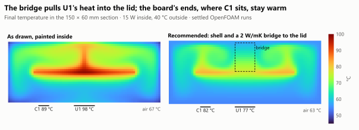
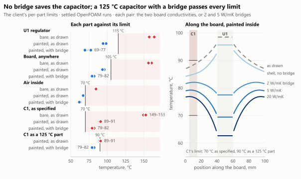

The Question
A sealed aluminium box, 150 × 60 mm in section and 200 mm deep, holds a circuit board at mid-height. The board gives off 10 W, and a 5 W regulator, U1, sits in its middle. Near one end is the bulk capacitor, C1. Outside is still air at 40 °C. The inside finish isn't decided, so I ran it bare (emissivity 0.1) and painted (0.9), and the board's copper layers make its in-plane conductivity uncertain, so I bracketed it at 5 and 20 W/mK. Does every part stay within its limit at every combination, and if not, what fixes it? The client, the parts, the powers and the limits are made up.
The requirements came in two rounds. The first brief gave two blanket limits: the hottest component at 85 °C and the air at 60 °C. Blanket limits stand in for the parts, so I asked for per-part data, and the client sent a list with datasheet values and a derating policy:
| Part | Limit | Where it comes from |
|---|---|---|
| U1, the regulator | case 115 °C | junction 150 °C less the client's 25 K margin, less 2 K/W × 5 W from junction to case |
| The board, anywhere | 105 °C | the laminate's 130 °C rating less 25 K |
| C1, a 105 °C, 5,000 h electrolytic | 70 °C | 50,000 h of life: life doubles for every 10 K under the rating, so 71.8 °C, rounded down for its own ripple heating |
| The air inside | 70 °C | the 0 to 70 °C rating of the other parts |
The list arrived after the first redesign results were known, though before the final runs, so it isn't a blind test. Every limit follows from a stated rule, and none was picked to make a design pass. The first round's verdicts are kept below.
The Answer
No. As drawn the box fails, and the capacitor is what decides it. Painted inside, U1, the board and the air all pass, but C1 runs at 89 to 91 °C against its 70 °C limit, which gives it about 13,000 to 15,000 hours of life instead of 50,000. Bare inside, every limit fails: U1 reaches 157 to 164 °C. A bare surface radiates very little, so the board has the air alone: radiation carries about 75 % of the heat to the walls when the inside is painted and 23 % when it's bare.
A bridge to the lid cools U1 a great deal and C1 very little. I modelled the walls as 2 mm of aluminium and added a bridge from U1 to the lid. With a 5 W/mK bridge U1 drops from 98 to 69 °C, but C1 only from 89 to 79 °C. Once U1's heat goes into the lid, the board's own 10 W makes its ends the hottest part, and C1 sits at an end. Even a 20 W/mK bridge leaves C1 at 76.9 °C. Moving C1 doesn't help either: as drawn, the coolest point of the board is its very end, only 2 K under C1.
What passes everything: paint the inside, change C1 to a 125 °C, 5,000 h capacitor, and add a bridge of at least 2 W/mK. By the client's own rule the new capacitor's limit is 90 °C. With a 2 to 5 W/mK bridge, C1 runs at 79 to 82 °C, U1 at 69 to 77 °C against 115, the board at 79 to 82 °C against 105, and the air at 62 to 63 °C against 70. Without the bridge the new capacitor would pass by only 4.6 K, and on the 20 W/mK board as drawn it wouldn't pass at all (90.9 °C).
Under the first brief, the bridge looked like the whole answer. A 5 W/mK bridge met the 85 °C component limit at either finish, and the 60 °C air limit failed with every design. The per-part list shows why that was the wrong question: the air limit had no part behind it, and the part that governs is the capacitor, which no bridge fixes.
The Model
- Section
- A 2D section through the box, 150 × 60 mm inside. The box's end walls are left out, so the model has less wall to lose heat through and errs on the hot side.
- Board
- A solid 100 × 2 mm strip at mid-height, with U1 as its middle 20 mm. Heat is generated inside both: 5 W in U1 and 10 W over the rest. C1 is read as the board's temperature under its footprint, 5 to 15 mm from the board's left end.
- Air
- Laminar natural convection, the air as a perfect gas, with radiation between the inside surfaces: grey and diffuse, the air transparent, 16 ray directions.
- Outside
- Convection at 5 W/m²K and radiation from a painted surface, emissivity 0.85, to still air at 40 °C.
- Solver
- OpenFOAM 14, the air and the solids solved together (conjugate heat transfer) and marched in time until the temperatures stop moving. 2 mm cells.
- Redesign
- The walls become a 2 mm aluminium shell, 200 W/mK, and a 20 × 29 mm bridge joins U1 to the lid. One effective conductivity stands for a pillar and its gap pad: 2 W/mK is 3.6 K/W through the box's depth, 5 W/mK is 1.45 K/W.


The case file: recorded assumptions, limits and inputs
This is the study's own record, written before the run and saved with it, in the shorthand of the case file.
cases/enclosure_k5_eps0p9_e.toml ↗
Sealed enclosure, 2D section: 15 W board (5 W component), board conductivity 5 W/mK, internal emissivity 0.9, 40 C ambient; hottest component and mean air against the limits.
Assumptions, and How Each Is Checked
- 2D section (per unit depth of the 200 mm box); the box's end walls are left out (conservative).
- Laminar natural convection (Rayleigh number about 1e5-1e6 on the box height), air as a perfect gas.
- Grey diffuse internal surfaces (emissivity the corner's value), transparent air.
- Walls: thin aluminium, no conduction resistance and no lateral spreading in the wall (each face loses heat locally: conservative for hot spots); outside h 5 W/m2K and emissivity 0.85 to 40 C (synthetic).
- Board: isotropic effective conductivity (the corner's value; synthetic bracket for FR4 with copper planes); the component a solid block of the board's material.
Limits
- 2D: no heat path through the box's end walls and no 3D flow.
- Steady operation only (a transient run to a settled state).
- No physical test data.
Inputs
| Input | Value |
|---|---|
| width_mm | 150 |
| height_mm | 60 |
| box_depth_mm | 200 |
| board_length_mm | 100 |
| board_thickness_mm | 2 |
| component_length_mm | 20 |
| power_component_W | 5 |
| power_board_W | 10 |
| board_k_W_mK | 5 |
| ambient_C | 40 |
| h_ext_W_m2K | 5 |
| eps_ext | 0.85 |
| eps_int | 0.9 |
| cell_mm | 2 |
| n_phi | 4 |
| max_iterations | 1 |
cases/enclosure_fix_k5_eps0p9_br2_long.toml ↗
Sealed enclosure redesign, verification to 9,000 s: board 5 W/mK, emissivity 0.9, shell and a bridge of 2 W/mK; aluminium shell 2 mm, 200 W/mK; hottest component and mean air against the limits.
Assumptions, and How Each Is Checked
- 2D section (per unit depth of the 200 mm box); the box's end walls are left out (conservative).
- Laminar natural convection (Rayleigh number about 1e5-1e6 on the box height), air as a perfect gas.
- Grey diffuse internal surfaces (emissivity the corner's value), transparent air.
- Walls: a 2 mm aluminium shell (200 W/mK) conducting along the walls; outside h 5 W/m2K and emissivity 0.85 to 40 C (synthetic).
- Bridge: a solid block the component's width from its top to the lid, one effective conductivity for a pillar and its gap pad; perfect contact at both ends.
- Board: isotropic effective conductivity (the corner's value; synthetic bracket for FR4 with copper planes); the component a solid block of the board's material.
Limits
- 2D: no heat path through the box's end walls and no 3D flow.
- Steady operation only (a transient run to a settled state).
- No physical test data.
Inputs
| Input | Value |
|---|---|
| width_mm | 150 |
| height_mm | 60 |
| box_depth_mm | 200 |
| board_length_mm | 100 |
| board_thickness_mm | 2 |
| component_length_mm | 20 |
| power_component_W | 5 |
| power_board_W | 10 |
| board_k_W_mK | 5 |
| ambient_C | 40 |
| h_ext_W_m2K | 5 |
| eps_ext | 0.85 |
| eps_int | 0.9 |
| cell_mm | 2 |
| n_phi | 4 |
| max_iterations | 1 |
| shell_thickness_mm | 2 |
| shell_k_W_mK | 200 |
| bridge_k_W_mK | 2 |
Why It Matters
A sealed box has no fan and no vents, so everything leaves through the walls, and inside it the heat has only weak paths: slow natural convection and radiation. Which of the two carries the load depends on the surface finish, something a drawing often leaves open. Here the finish alone moves U1 by more than 60 K. And a limit written as "hottest component" points the fix at the hottest part, when the part that wears out first may sit somewhere cooler.
How It Works

The same model runs at the four corners of what isn't known, the board's conductivity and the inside finish:
| Board | Inside | U1 | Board, hottest | C1 | Air | Radiation's share |
|---|---|---|---|---|---|---|
| 5 W/mK | painted, 0.9 | 98.4 °C | 95.8 °C | 89.2 °C | 66.9 °C | 75 % |
| 20 W/mK | painted, 0.9 | 94.2 °C | 93.4 °C | 90.9 °C | 67.0 °C | 75 % |
| 5 W/mK | bare, 0.1 | 164.3 °C | 160.7 °C | 149.4 °C | 84.3 °C | 23 % |
| 20 W/mK | bare, 0.1 | 157.4 °C | 156.4 °C | 152.7 °C | 84.5 °C | 23 % |
| Limit | ≤ 115 °C | ≤ 105 °C | ≤ 70 °C | ≤ 70 °C |
Then the redesign, on the 5 W/mK board, which is the worse one for U1, with the bridge's conductivity stepped up. Each cell reads painted / bare; bold misses its limit, with C1 judged as specified:
| Bridge | U1 | Board, hottest | C1 | Air |
|---|---|---|---|---|
| None, walls modelled | 95.6 / 154.6 °C | 93.6 / 152.7 °C | 85.4 / 129.9 °C | 65.8 / 80.8 °C |
| 1 W/mK | 84.3 / 107.0 °C | 84.8 / 116.6 °C | 84.6 / 116.6 °C | 64.2 / 72.1 °C |
| 2 W/mK | 77.5 / 90.8 °C | 82.1 / 107.0 °C | 82.1 / 107.0 °C | 63.1 / 69.0 °C |
| 5 W/mK | 69.4 / 75.6 °C | 79.2 / 97.9 °C | 79.2 / 97.9 °C | 61.8 / 65.8 °C |
| 20 W/mK | 62.6 / 65.2 °C | 76.9 / 91.6 °C | 76.9 / 91.6 °C | 60.6 / 63.5 °C |
| Limit | ≤ 115 °C | ≤ 105 °C | ≤ 70 °C as specified, ≤ 90 °C as a 125 °C part | ≤ 70 °C |
With a bridge in, C1's footprint holds the board's hottest point in every run, to within 0.2 K. The new capacitor needs paint as well: bare inside, even the 5 and 20 W/mK bridges leave C1 at 97.9 and 91.6 °C, over its 90 °C.
How I Checked It
- Natural convection against a published benchmark, before the box was modelled: the square cavity with one hot and one cold wall (de Vahl Davis, 1983), at four Rayleigh numbers from 10³ to 10⁶. The heat crossing the cavity lands within 0.05 to 0.57 % of the published values, and the peak air speeds within 0.62 %. A three-mesh study at the highest Rayleigh number extrapolates the heat transfer to within 0.07 % of the benchmark. One of the two peak speeds converged faster than the method allows, so its uncertainty can't be estimated, and that mesh study is recorded as failing verification.
- Radiation against an exact answer: the heat exchanged between two concentric cylinders, where the two-surface formula is exact. With the 16 ray directions the box runs use, the model is 0.92 % under it, inside the 1 % I set but only just. With 32 directions it's 0.20 %, and 64 give 0.05 %. At 32 directions it stays within 0.21 % for emissivities from 0.1 to 0.9.
- Settled, and checked by energy: every one of the 14 final runs passes its checks. The heat leaving the box matches the 15 W put in to within 0.05 %, and the temperatures moved by less than 0.01 K over the last tenth of each run.
- Predictions before the runs: I predicted every final value from shorter runs extrapolated to the settled state. All 14 landed within 0.02 K, and every requirement verdict I'd predicted held. The three I'd left open, C1 in the painted redesign, came out as fails.
- Mesh: one corner, painted with the 20 W/mK board, rerun on 1 mm cells. U1 moves 0.05 K and the air 0.13 K. Two mesh sizes give a difference, not a convergence study.
What I Caught Along the Way
- A blanket limit hid the part that decides the design. Under the first brief, a bridge to the lid looked like the answer. Asking for the parts' own limits showed that the capacitor's life governs, and that no bridge fixes it.
- Energy made by a name pattern. Two patterns matched the solids' boundary names, and the general one also caught the air's side. The board never lost the heat it radiated, and the walls were shedding 671 W/m² against 179 put in. The heat balance caught it, and explicit names fixed it.
- A boundary condition can't spread heat. As drawn, the walls are a boundary: each face loses its heat where it arrives. That's fine until a bridge puts 5 W into 20 mm of lid, which would then sit about 110 K above ambient. So the redesign models the walls as solid aluminium.
- An accounting error that hid an unsettled run. Six of the first ten redesign runs failed the 1 % heat balance. My totals multiplied each wall flux by a nominal 2 mm face, but the mesher rounds each block to whole cells, so the perimeter came out 1.9 % short. With the exact areas, read from the mesh, the real issue showed: the shell and bridge give the box a slow drift, with a time constant near 20 minutes, and those one-hour runs hadn't settled. My settling check on U1 had passed all ten. The heat balance is now the settling test, and the 2.5-hour reruns confirmed the extrapolated values to 0.02 K.
- A steady solve that only looked converged. The steady version of the coupled solve ran 9,246 iterations and then diverged, so every run marches in time instead.
- My hand estimates missed where it mattered. I expected the 1 W/mK bridge to leave U1 near 100 °C, and it ran 15 K cooler. I expected a bare interior to cost a few kelvin once a bridge was in, and it cost 2.5 to 22 K. Each miss is written into the case file beside the prediction.
Limits
- A 2D section: no end walls and no 3D flow. A 3D model would credit the end walls, so the real box should run cooler than this.
- C1 is read as the board under it, with its own ripple loss covered by the client's 1.8 K allowance; U1's hottest model point stands for its case, which errs on the safe side; and the air limit is judged on the mean air, since a 2D section has no local air for each part.
- The redesign was run on the 5 W/mK board only. As drawn, the 20 W/mK board puts C1 1.7 K hotter; the recommended design's 8 to 11 K margin covers that, but it isn't run.
- The bridge is one effective conductivity with perfect contact. A real pad's contact resistance has to come out of the same thermal-resistance budget.
- Radiation with 16 directions is 0.9 % off on the benchmark, close to its 1 % limit, and radiation carries about three quarters of the heat when the inside is painted.
- Laminar flow, grey diffuse surfaces and transparent air.
- No physical test. The parts, the powers, the limits and the outside conditions are made up.
Evidence
Run reports, with every check and the saved inputs
- cavity_devahldavis
- cavity_mesh_ra1e6
- annulus_angular
- annulus_emissivity
- enclosure_k5_eps0p1
- enclosure_k5_eps0p9
- enclosure_k20_eps0p1
- enclosure_k20_eps0p9
- enclosure_k20_eps0p9_mesh1mm
- enclosure_fix_k5_eps0p1_br1
- enclosure_fix_k5_eps0p1_br2
- enclosure_fix_k5_eps0p1_br20
- enclosure_fix_k5_eps0p1_br5
- enclosure_fix_k5_eps0p1_shell
- enclosure_fix_k5_eps0p9_br1
- enclosure_fix_k5_eps0p9_br2
- enclosure_fix_k5_eps0p9_br20
- enclosure_fix_k5_eps0p9_br5
- enclosure_fix_k5_eps0p9_shell
- enclosure_fix_k5_eps0p1_br1_long
- enclosure_fix_k5_eps0p1_br20_long
- enclosure_fix_k5_eps0p1_br2_long
- enclosure_fix_k5_eps0p1_br5_long
- enclosure_fix_k5_eps0p1_shell_long
- enclosure_fix_k5_eps0p9_br1_long
- enclosure_fix_k5_eps0p9_br20_long
- enclosure_fix_k5_eps0p9_br2_long
- enclosure_fix_k5_eps0p9_br5_long
- enclosure_fix_k5_eps0p9_shell_long
- enclosure_k5_eps0p9_e
- enclosure_k20_eps0p9_e
- enclosure_k5_eps0p1_e
- enclosure_k20_eps0p1_e